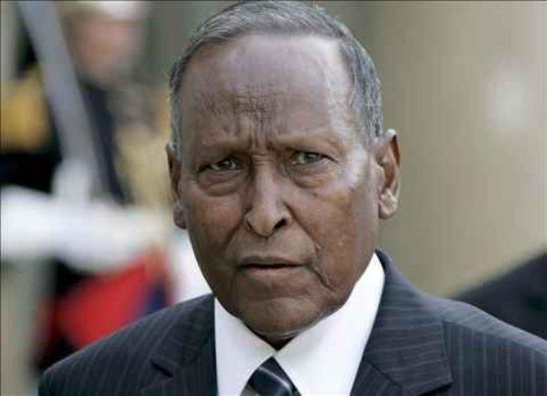

Abdulahi Yusuf Ahmed

TAARIIKH KOOBAN
C/Lahi Yuusuf Axmed, Allah ha u naxariistee, waxa uu ku dhashay magaalada Gaalkacyo ku dhashay December sanadkii 1934.
Markii uu waxbarashadiisa dugsiga dhexe iyo sare ku dhamaystay soomaaliya, wuxuuna galay kuliyada sharciga ciidamada, markaas kadib ayaa laba sano oo waxbarasho gaaban ah loogu diray talyaaniga sanadadii 1954-1956.
Sanadkii 1957 dii ayaa loomagacaabay ku xigeenka taliyaha booliiska ee gobolka Benaadir, isagoo jagadaas hayay mudo sanad ah. jagadiisii labaad waxaa 1958 kii uu noqday taliyaha qaybta booliiska ee gobolada Jubada sare iyo jubada hoose.
1960 bilawgiisii ayaa sanad waxbarasho militery ah loogu diray talyaaniga. Markii uu talyaaniga kasoo laabtay ayuu qabtay jagadii ugu horaysay ee militariga isagoo noqday taliyaha policemilitaryga ee qaybta 26 aad ee fadhigeedu ahaa gobolada Woqooyiga soomaaliya.
Sanadkii 1964tii ayaa loo Dalacsiiyay darajada Gaashaanle dhexe “Lieutenant Colonel” waxaa uuna isla markaasi u soo gudbay maamulka dhexe ee wasaarada gaashaandhiga soomaaliya.
Markale ayaa waxbarasho loogu diray dalka Ruushka (midawga soviet) isagoo galay kuliyadda dagaalka ee militariga (Military war college) sanadkii 1965-66.
Markii uu halkaas ka soo noqdayna waxaa laga dhigay taliyaha hogaanka tababarka ee ciidanka xoogga dalka soomaaliyeed biishii may ee sanadkii 1968dii.
Markale ayaa lagu celiyay gobolada woqooyiga soomaaliya sanadkii 1969kii isagoo halkaas looga dhigay abbaanduulaha ciidankii looyaqaanay “ciiidanka koobaad” ee fadhigooda woqooyiga soomaaliya.
Waxaa maalmihii curashada kacaanka sanadkii 1969kii loo taxaabay xabsiga asagoo lagu eedeeyey in uu ka caga jiidayey
kanaackii uu hogaaminayey Siyaad Barre. waxaana uu xidhnaa muddo lix-sano ah iyadoo la soo daayay sanadkii 1975tii. Maxamed siyaad barre oo madaxa u salaaxaaya ayaa waxaa uu ka dhigay taliyaha hogaanka gaadiidka iyo dayactirka ee xoogga dalka sanadadii 1975-1977dii.
Dagaalkii xoraynta ee soomaalida Galbeed ayaa waxaa loo magacaabay in uu hogaamiyo ciidamada Dagaalka, wuxuuna noqday taliyaha qaybtii kadagaalamaysay koonfur Galbeed soomaaliya, wuxuuna ciidamadii itoobiyaanka cabdulaahi kaga adkaaday dhankaas isagoo ka qabtay dhamaan aaggii isaga ku aadanaa,illaa uu gaadhay magaala madaxda gobolka Nagaylle1978dii.
Sannadkii 1978 waxaa dhacay inqilaabka loo yaqaan ‘Inqilaabkii dhicisoobey’, Waxa uu u galay dalka Itoobiya.
Bishii September 1978dii ayuu asaasay mucaaradkii ugu horeeyay ee taariikhda dalka soomaaliya (SSF).
Sannadkii 1985 ayuu Mingiste Xayle maryama xabsi ay leeyihiin ciidamadu oo kuyaal Itoobiya u taxaabay C/llaahi Yusuf. Lix-sano oo kale ayuu xirnaa, wuxuuna xabsigii Itoobiya ka soo baxay 1991 kadib markii uu dhacay maamulkii Mengistu, xilligaas oo dawladii Soomaaliyana ay dhacday.
October 10, 2004 ayuu C/Laahi Yuusuf noqday madaxweynaha KMG ee Dawlada Dhexe ee Soomaaliya. Jagadaas oo uu muddo ku taamayey in uu gaaro. Waxana uu dhawr jeer intii uu shirka Kenya socdey ku celceliyey in uu asagu bilaabay dhibka Soomaaliya uuna asagu dhamayn karo.
C/laahi Yuusuf Axmed waxa uu xilka madaxweynahii DFKMG iska casiley Isniin December 29, 2008 (oo ku beegayd 1da bisha Koowaad ee Muxarram ee sannadka Hijrada 1430). Waxana uu sidaas ku dhawaaqay kaddib markii uu hor tegey xildhibaanadda baarlamaanka DFKMG ee Baydhabo, waxana uu warqaddii is casilaadda u dhiibey Aadan madoobe, Guddoomiyahii baarlamaanka DFKMG. Isagoo muujiyey in is casilaadiisa ay sabab u ahayd cadaadis kaga yimid beesha caalamka.
Is casilaadiisii kaddib waxa uu tegey dalka Yemen halkaas oo uu muddooyinkii ugu dambeeyey ku noolaa.
Allah ha u naxariistee Cabdullaahi Yuusuf waxa uu Jimce Maarso 23, 2012 ku geeriyoodey magaalada Dubai ee dalka imaaraadka Carabta.
Waxaa uu ifka kaga tegey 2 wiil iyo 2 gabdhood iyo xaas
Samir iyo iimaan Allah haka siiyo ehel kiisii.
Dhacdooyin Kooban ee Soomaaliya:

- June 2006:
ayaa Maxkamaduha Islaamigu waxay si rasmi ah gacanta ugu dhigeen Muqdisho
- December 28, 2006 :
ayaa maxkamaduhu ka baxeen Muqdisho, maarkaas oo Itoobiya gashay caasimada Soomaaliya markii ugu horeysey taariikhda Soomaalida oo muddo dheer colaadi ka dhaxaysey.
- January 8, 2007:ayaa C/laahi Yuusuf waxa uu markii ugu horeysey Muqdisho ka degey ilaa marki la doortay October 2004.
- August 30, 2007: ayaa Muqdisho waxaa lagu qabtay kulkan ballaaran oo ay ka soo qayb galeen beelo badan Soomaaliyeed, kulaankaas oo loogu yeeray dib u heshiisiin beeleed ayaan dhalin maxsuul.
- March 26, 2008 : ayaa markale dagaalyahano ka tirsanaa Maxkamaduhu ay qabsadeen Jawhar oo la ollog ah Muqdisho.
- August 18, 2008 :ayaa Jabuuti waxaa heshiis ku dhex maray qaar ka tirsan maxkamadihii iyo DFKMG, in kasta oo qaar kale ku gacan sayreen heshiiskaas.
- August 22, 2008:ayaa Koox ka tirsanaa Maxkamadihii ama/iyo Al-Shabaab ay qabsadeen magaalada dekedda ah ee Kismaayo, kaddib markii uu halkaas ka dhacay dagaal dad badani ku dhinteen.
- November 12, 2008 : ayaa magaalada Marka waxay ka baxday gacanta DFKMG..
- November 14, 2008 : ayaa Al-Shabaab waxay la wareegeen Siinka-Dheer iyo Ceelasha oo Muqdisho u jira 15 Km. Markaasna C/laahi Yuusuf waxa uu qiray in kooxaha ka soo horjeeda ay gacanta ku hayaan badanaa Soomaaliya, isagoo muujiyey in ay dsuurtagal tahay in xukuumaada DFKMG ay afka ciida la geli karto
- November 28, 2008 : ayaa Itoobiya sheegtay in ay la baxayso Ciidamadeeda ku jira Soomaaliya.
- December 10, 2008 : ayaa markii ugu horeyey (ilaa markii laga cayriyey) waxaa Muqdisho ku laabtay Sh. Shariif Sh. Axmed oo warbaahintu ugu yeraan Islaamiyiinta aan mayalka adkayn. (Waxaana la sheegay in wixii ka dambeeyey cayrintii Maxkamadaha ee Muqdisho ay Soomaaliya ku dhinteen dad tiradoodu gaareyso ilaa 16,210 qof, sida ay werisey Reuters.)
- December 14, 2008: ayaa C/laahi Yuusuf waxa uu sheegay in uu xilka ka qaaday ra’iisul wasaaraha DFKMG, Nuur Cadde, isaga oo u cuskaday in xukuumaddiisu ku guul daraysatay wax ka qabashada ammaanka dalka. Maalintii xigtey ayaa waxaa la sheegay in barlamaanka DFKMG ee Baydhabo ay xilka ku celiyeen Nuur Cadde, in kasta oo filim laga duubay muujinayey buuq iyo sawaxan in uu kulankaasi ku dhammaaday (daawo….)
- December 16, 2008 :ayaa C/laahi Yuusuf waxa uu ra’iisul wasaare u magacaabay Gacma Dheere.
- December 24, 2008 : ayaa Gacma Dheere waxa uu shir jaraa’id (Baydhabo) ka shegay in uu iska casiley xilkii ra’iisul wasaare. Isla markaas waxaa soo baxay in C/laahi Yusuf afhayeenkiisu uu sheegay in madaxweynaha DFKMG uu is casilayo December 27, 2008